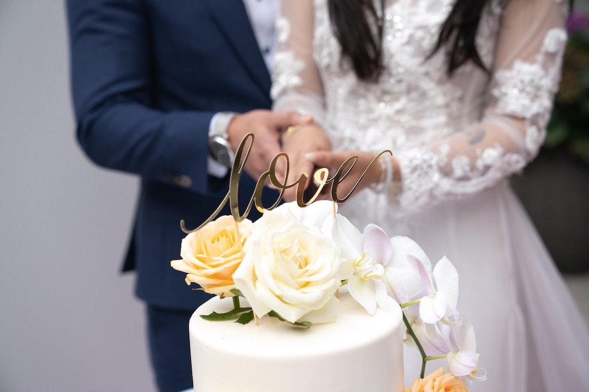

No matter what your special occasion is, we can provide the perfect desserts to complement any event. We have delivered cakes for birthday parties, holiday parties, office parties, and many more special occasions. Any event will be much improved with the addition of a gourmet cake and we can make certain that you have a wonderful cake that is made from scratch with natural ingredients just like you would find at home.
Here is our list of some of the best wedding cake ideas for every type of bride! No matter what kind of wedding you are having, there are lots of wedding cake flavors, designs, and decorations to consider.
- The most traditional wedding cake design is usually a white wedding cake. Classic wedding cakes have traditionally had white vanilla buttercream with seasonal fruits.
- If you are having a spring wedding, or if your wedding theme includes a lot of floral elements, you can consider a floral wedding cake. DS cakes use fresh flowers to create a design element on your cake.
- Wedding cake toppers are adorable elements to your wedding cake. there are many different cake toppers we can help you choose
- if you don’t want a huge wedding cake, a mini cake may be the best option for you! Wedding cake prices can be very high, so if you want to stick to a budget while still having a wedding cake, this is a great idea.